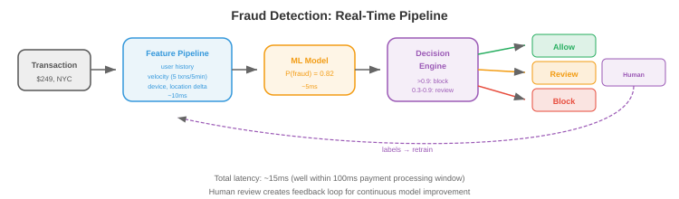

ML设计示例¶
学习ML系统设计的最佳方式是通过实操示例。本文件详细介绍了七个完整的设计：推荐系统、搜索排序、广告点击预测、欺诈检测、内容审核、对话式AI和大规模图像搜索
- 每个示例遵循一致的框架：
- 问题定义：我们在构建什么，用户是谁，约束是什么？
- 数据：我们有什么数据，如何收集，如何标注？
- 特征：模型需要什么特征？
- 模型：什么架构和训练方法？
- 服务：模型如何部署和提供服务？
- 评估：我们如何衡量成功？
- 迭代：随着时间的推移，我们会做哪些改进？
1. 推荐系统（例如YouTube、Netflix、Spotify）¶
问题定义¶
- 目标：向用户展示他们会喜欢的内容，最大化参与度（观看时间、收听次数、点击量）。
- 规模：10亿+用户，1亿+项目，每秒10K+推荐。
- 延迟：完整推荐流水线<200ms。
- 关键挑战：候选空间巨大（1亿个项目）。无法为所有用户实时评分所有项目。
架构：两阶段流水线¶

候选生成¶
- 目标：将1亿个项目减少到约1000个候选。必须快速（<50ms）。
- 双塔模型：将用户和项目编码到相同的嵌入空间。用户嵌入捕获偏好；项目嵌入捕获内容特征。得分 = 用户嵌入和项目嵌入的点积。
- 训练：在（用户、正样本、负样本）三元组上进行对比学习。正样本=用户参与过的项目。负样本=随机项目+难负样本（用户未参与过的热门项目）。
- 服务：预先计算所有项目嵌入。在请求时：计算用户嵌入，ANN搜索（向量数据库中的HNSW）以找到最近的1000个项目嵌入。
排序¶
- 目标：精确评分1000个候选。可以花费约100ms。
- 模型：一个深度神经网络（MLP或Transformer），使用丰富特征：用户特征（人口统计、历史、上下文）、项目特征（内容、流行度、新鲜度）和交叉特征（用户-项目交互历史、上下文相关性）。
- 输出：预测的参与概率（点击、观看50%+、点赞、分享）。多个目标可以组合：\(\text{score} = w_1 \cdot P(\text{点击}) + w_2 \cdot P(\text{观看}) + w_3 \cdot P(\text{点赞})\)。
重新排序¶
- 应用业务规则：多样性（不展示来自同一创作者的5个视频）、新鲜度（提升新内容）、安全（过滤被标记的内容）和个性化探索（展示一些用户可能发现的低排名项目）。
粗略估算数字¶
- 项目嵌入索引：1亿个项目×256维×float16 = 50 GB。HNSW索引增加约2倍开销→约100 GB。适合具有128 GB内存的单台机器，或分片到4×32 GB机器。
- 用户嵌入计算：每个用户约5ms（小型MLP处理用户特征）。在10K QPS下，需要约50个模型副本处理负载。
- ANN搜索：使用HNSW从1亿个向量中搜索前1000个约需2ms。在10K QPS下，每个索引副本处理约500 QPS→需要20个副本。
- 排序模型：1000个候选×每个候选约0.1ms = 每次请求100ms。在10K QPS下，需要每秒1000 GPU秒→仅排序就需要约10个A10G GPU。
- 总基础设施：约20个嵌入索引副本+约50个用户嵌入服务器+约10个排序GPU+缓存+负载均衡器。成本：云价格下每月约\(5万-\)10万。
冷启动¶
- 新用户（无历史记录）：使用人口统计特征、设备/位置上下文和基于流行度的推荐。经过5-10次交互后，切换到个性化模型。
- 新项目（无参与数据）：使用基于内容的特征（标题、描述、缩略图嵌入）。分配探索预算：向一部分用户展示新项目以快速收集参与数据。在经过提升期后仍无参与的项目被降级。
- 冷启动是系统问题：特征存储必须优雅地处理缺失特征（返回默认值，而不是错误）。模型必须使用缺失特征进行训练（训练期间对用户历史特征进行dropout可以模拟新用户）。
评估¶
- 离线：NDCG（归一化折损累计增益）、Recall@K、Precision@K。
- 在线：测量观看时间、DAU、留存的A/B测试。长期A/B测试（数周）以捕获短期测试无法观察到的用户留存效应。
2. 搜索排序（例如Google、Bing）¶
问题定义¶
- 目标：给定用户查询，从数十亿文档的语料库中返回最相关的结果。
- 延迟：总计<500ms（检索100ms + 排序200ms + 渲染100ms + 开销）。
架构：查询理解→检索→排序¶
查询理解¶
- 在检索之前，处理原始查询以改进结果：
- 拼写纠正："reccomendation systm"→"recommendation system"。使用编辑距离模型或序列到序列模型，在（拼写错误，纠正）对上训练，数据来自搜索日志。
- 查询扩展：添加相关术语以提高召回率。"Python ML"→"Python machine learning scikit-learn pytorch。"使用同义词词典、词嵌入或LLM生成扩展。
- 意图分类：确定用户想要什么。"buy Nike shoes"是交易型（展示产品页面）。"How does backpropagation work"是信息型（展示文章）。"facebook.com"是导航型（直接转到网站）。不同意图应触发不同的检索策略和结果布局。
- 实体识别：从查询中提取实体。"best restaurants near Times Square"→位置："Times Square"，实体类型："restaurants。"路由到位置感知搜索流水线。
检索¶
- BM25（传统）：使用倒排索引进行词匹配检索。快速，对关键词查询有效。没有语义理解（"dog food"不匹配"canine nutrition"）。
- 稠密检索：将查询和文档编码为嵌入（使用如DPR或ColBERT的双编码器）。通过ANN搜索检索。捕获语义相似性（"dog food"匹配"canine nutrition"）。比BM25慢，但对于自然语言查询更好。
- 混合检索：结合BM25和稠密检索。BM25找到精确关键词匹配；稠密检索找到语义匹配。合并并去重。两全其美。
排序¶
- 学习排序：一个模型对每个（查询，文档）对评分。三种方法：
- 点式：独立预测每个文档的相关性分数。简单但忽略相对顺序。
- 成对式：预测两个文档中哪个更相关。LambdaMART（梯度提升树）是经典方法。
- 列表式：直接针对列表级指标（NDCG）优化整个排序列表。更复杂但结果最好。
- 交叉编码器：一个以
[查询，文档]为输入并输出相关性分数的Transformer。比双编码器更准确（后者独立编码查询和文档），因为它捕获了细粒度的交互。但对于完整语料库来说太慢——仅用于对检索前100-1000个候选进行重新排序。
特征¶
- 查询特征：查询长度、语言、意图分类（导航型、信息型、交易型）。
- 文档特征：PageRank、新鲜度、内容质量分数、域名权威性。
- 查询-文档特征：BM25分数、嵌入相似度、精确匹配数、历史日志中此（查询，文档）对的点击率。
3. 广告点击预测¶
问题定义¶
- 目标：预测用户点击广告的概率。这决定在实时拍卖中出价多少。
- 规模：每秒100K+次拍卖，每次预测需在10ms内完成。
- 收入影响：点击预测准确率提高0.1%就相当于数百万的额外收入。
架构¶
- 特征工程是广告系统的核心。特征包括：
- 用户特征：人口统计、浏览历史、购买历史、设备、位置、一天中的时间。
- 广告特征：创意（图片/文字）、广告主、类别、历史CTR、出价金额。
- 上下文特征：页面内容、广告位置、设备类型、连接速度。
- 交叉特征：user_category×ad_category交互，user_region×ad_campaign交互。
- 模型：历史上用逻辑回归（简单、快速、可解释）。现代系统使用深度学习：DLRM（深度学习推荐模型），对分类特征使用嵌入表，对稠密特征使用MLP。
- 校准：预测概率必须准确（如果模型说P(点击)=0.05，那么实际上应该有5%的展示被点击）。校准至关重要，因为预测概率直接决定出价金额。
- 探索-利用：总是展示预测的最佳广告在长期来看是次优的（你永远无法发现新广告可能更好）。Thompson采样或\(\epsilon\)-greedy探索确保有一部分展示分配给不确定性较高的广告以收集数据。
实时竞价¶
- 当用户加载页面时，广告拍卖在<100ms内进行：
- 发布者向多个广告交易平台发送竞价请求（用户信息、页面上下文）。
- 每个广告主的竞价服务器预测其广告的CTR。
- 出价 = CTR × 每次点击的价值。出价高的赢得拍卖。
- 获胜的广告被展示；如果被点击，广告主付费。
4. 欺诈检测¶
问题定义¶
- 目标：实时检测欺诈性交易（信用卡欺诈、账户盗用、虚假评论）。
- 延迟：<100ms（交易必须在支付处理前被批准或标记）。
- 关键挑战：极端类别不平衡（欺诈率0.1%）。误报会阻止合法用户；漏报会造成金钱损失。
架构¶

特征¶
- 交易特征：金额、货币、商户类别、一天中的时间、是否跨国。
- 用户特征：账户年龄、平均交易金额、近期交易次数、设备指纹。
- 速度特征（实时，来自流处理流水线）：过去5分钟内的交易次数、过去1小时内的不同商户数、与上次交易的地理距离。
- 图特征：此商户是否与已知欺诈团伙有关联？此设备是否与被标记账户共享？
模型¶
- 梯度提升树（XGBoost、LightGBM）是表格数据欺诈检测的标准。它们处理混合特征类型、可解释（特征重要性）且训练快速。
- 处理不平衡：对多数类进行欠采样、对少数类进行过采样（SMOTE），或在损失函数中使用类别权重。Focal loss（第8章）降低简单负样本的权重。
- 成本矩阵：误报（阻止合法交易）有成本（用户挫败感、销售损失）。漏报（遗漏欺诈）有不同的成本（财务损失）。决策阈值应最小化总预期成本，而非最大化准确率。
人在回路中¶
- 不确定的预测（模型置信度在0.3和0.7之间）发送给人工审核员。审核员的决策成为重新训练的标签。这创建了一个反馈循环：随着模型看到更多标记的欺诈案例，它随着时间的推移而改进。
5. 内容审核¶
问题定义¶
- 目标：自动检测并移除有害内容（仇恨言论、暴力、虚假信息、CSAM）从一个平台。
- 规模：每天数十亿条帖子（文本、图片、视频）。
- 挑战：上下文依赖（讽刺、戏仿、文化细微差别）。必须在言论自由和安全之间取得平衡。
架构¶
- 多模态分类：文本、图片和视频分别使用单独的模型，加上融合层组合它们的信号。
- 文本审核：微调的语言模型将文本分类为类别（骚扰、仇恨言论、虚假信息、垃圾信息）。多语言模型处理100+种语言。
- 图片审核：视觉模型检测：露骨内容（裸体、暴力）、图片中的文字（OCR+文本分类器）和已知有害内容（哈希匹配与已知CSAM数据库进行比对）。
- 视频审核：按固定间隔采样帧，对每帧运行图像分类器，结合音频转录（ASR→文本分类器）。
- 策略即代码：审核策略以结构化规则定义，将模型输出映射到操作：
if text_model.hate_speech_score > 0.9:
action = "remove"
elif text_model.hate_speech_score > 0.7:
action = "human_review"
else:
action = "allow"
- 策略频繁更改（新法规、不断发展的规范）。将策略与模型分离确保可以在不重新训练的情况下部署更改。
主动vs被动审核¶
- 主动审核（发布前）：在内容上线前运行分类器。高置信度违规自动阻止。这防止了有害内容被看到，但会增加发布延迟并存在误报风险（阻止合法内容）。
- 被动审核（发布后）：内容立即上线。用户可以举报违规。举报触发分类器+人工审核。发布者延迟低，但有害内容在检测到之前是可见的。
- 大多数平台两者都用：对高严重性类别（CSAM：零容忍，发布前阻止）使用主动审核，对细微类别（虚假信息：需要人工判断，收到举报后审核）使用被动审核。
哈希匹配¶
- 对于已知有害内容（CSAM、恐怖主义宣传），使用感知哈希：计算对微小修改（裁剪、调整大小、压缩）鲁棒的图像/视频哈希值。与已知有害内容数据库（NCMEC的哈希数据库、GIFCT共享哈希数据库）进行比较。匹配→立即移除，无需分类器。
- PhotoDNA（微软）是CSAM检测的标准感知哈希。在许多司法管辖区这不仅是技术选择，更是法律义务。
粗略估算数字¶
- 规模：每天10亿条帖子=约12K帖子/秒。每个帖子需要：文本分类（约5ms）、图片分类（约20ms）、哈希匹配（约1ms）。在12K QPS下：需要约60个文本分类器、约240个图片分类器和约12个哈希匹配器（加上冗余）。
- 人工审核：如果2%的帖子被标记审核=每天2000万条。以每人每天100条审核计，需要20万审核员（这就是自动化准确率至关重要的原因：误报每降低0.1%就能每天节省100万条审核）。
- 延迟预算：主动审核必须在发布流水线内完成（约500ms）。文本（5ms）+ 图片（20ms）+ 哈希（1ms）+ 开销=远在预算之内。视频是例外：即使从10分钟视频中每秒采样1帧，也需要600次分类器调用→异步处理。
升级工作流¶
- 自动移除→人工审核上诉→专家审核（法律、文化专家）→政策团队处理模糊案例。每个级别处理的案例更少但更细致。
- 反馈给模型：人工审核决策是重新训练的最高质量标签。模型和审核员之间的分歧被优先用于主动学习——它们代表了模型处理最差的案例。
6. 对话式AI（基于RAG的聊天机器人）¶
问题定义¶
- 目标：一个能回答关于公司产品问题的聊天机器人，使用其文档。
- 要求：准确（不产生幻觉）、引用来源、处理后续问题、保持在产品领域内。

架构：检索增强生成（RAG）¶
组件¶
- 文档摄入：将文档分块并嵌入。分块策略非常重要：
- 固定大小分块：每N个令牌（如500）分割，M个令牌（如50）重叠。简单，块大小可预测，但可能在句子中间或段落中间分割，丢失上下文。
- 语义分块：在段落或章节边界分割。每个块是一个连贯的信息单元。大小可变（有些块100个令牌，其他800个），需要检索系统处理可变长度。
- 递归分块：尝试在段落边界分割。如果段落太长，在句子边界分割。如果句子太长，在固定大小分割。连贯性和大小一致性的最佳平衡。
- 嵌入：用文本编码器（如E5、BGE、Cohere embed）嵌入每个块。存储在向量数据库中。
- 检索：嵌入用户查询，搜索向量数据库中最相似的\(k\)个块（通常\(k = 5\)-\(10\)）。可选地使用交叉编码器重新排序以提高精度。
- 生成：构建包含检索块作为上下文的提示：
- 护栏：防止LLM回答产品领域外的问题、生成有害内容或与检索到的上下文相矛盾。实现为：输入过滤（拒绝离题查询）、输出过滤（检查响应是否与检索到的上下文一致）和宪法提示（指示模型拒绝某些请求）。
- 对话记忆：维护最近\(n\)轮对话。将其包含在提示中，使模型能理解后续问题（"定价如何？"→需要关于哪个产品的先前上下文）。
查询重写¶
- 用户经常问模糊的后续问题："定价如何？"（什么产品的定价？）。查询重写使用对话历史生成独立查询：
- 输入：对话历史 + "定价如何？"
- 重写后："产品X的企业版定价是多少？"
- 这个重写后的查询才是被嵌入并在向量数据库中搜索的。如果没有重写，检索会搜索"定价"而没有上下文，返回不相关的块。
- 查询重写可以用小型LLM调用（约50ms）或微调的序列到序列模型（约5ms）完成。
粗略估算数字¶
- 文档语料库：10K页，每页平均2000个令牌=2000万令牌。以每块500个令牌、50个重叠计=约44K个块。
- 嵌入索引：44K块×768维×float16=约65 MB。轻松适合内存。即使1000万个块也仅约15 GB。
- 延迟分解：查询嵌入（5ms）+ 向量搜索（2ms）+ 交叉编码器重新排序（前50个20ms）+ LLM生成（500-2000ms）= 总计约600-2100ms。LLM占主导地位。使用流式传输减少感知延迟。
- 成本：以\(3/100万令牌（Claude/GPT-4 API）计，每天1000次查询、每次约2000个令牌=约\)6/天。大规模（每天100万次查询）下，在2个A10G GPU上自托管7B模型（约$50/天）可实现100倍成本降低。
评估¶
- 检索质量：Recall@K（前K个块是否包含答案？）、MRR（平均倒数排名）。
- 生成质量：事实准确性（响应是否匹配检索到的上下文？）、有依据性（响应是否引用了正确块？）、答案相关性。
- 端到端：用户满意度（赞/踩）、转接给人工客服的比率。
7. 大规模图像搜索¶
问题定义¶
- 目标：给定一张图像，从10亿+图像的语料库中找到视觉上相似的图像。
- 应用：反向图像搜索、产品搜索（照片→匹配的产品）、重复检测。
- 延迟：<500ms（包括网络往返时间）。
架构¶
嵌入提取¶
- 模型：预训练的视觉编码器（ViT、CLIP的图像编码器、DINOv2）。如果需要，在特定领域（时尚、电商、医学影像）上进行微调。
- 训练：对比学习（第10章）。正样本对=同一图像的不同视角（或图像+匹配的文本）。负样本对=随机图像。模型学习为相似图像生成相似嵌入，为不同图像生成不同嵌入。
索引¶
- 离线：嵌入所有10亿张图像并构建ANN索引。对于HNSW（文件03），构建索引需要数小时，索引存储在内存中（10亿×512维×float16 + 图开销约128 GB）。
- 分片：将索引拆分成跨多台机器。每台机器持有一个分片。查询时，并行搜索所有分片并合并前K个结果。
- 增量更新：新图像（上传、新产品）必须添加到索引中。HNSW支持增量插入而无需重建。向量数据库（Milvus、Pinecone）原生处理此需求。
服务¶
- 嵌入服务：运行ViT模型的GPU服务器。延迟：每张图像约20ms。批量处理多个查询以提高吞吐量。
- 搜索服务：ANN索引服务器。延迟：对于10亿向量中搜索前100个（使用HNSW）约10ms。
- 缓存：缓存热门查询的结果。对于重复检测，缓存最近上传的图像的嵌入，在搜索完整索引之前将新上传与缓存进行比较。
评估¶
- Precision@K：前K个结果是否实际相似？
- Recall@K：在语料库中所有真正相似的图像中，有多少在前K个中？
- 平均精度均值（mAP）：精确率-召回率曲线下的面积。
- 人工评估：对于主观相似性，人工评分员判断检索到的图像是否相关。
面试框架¶
- 当你遇到系统设计问题时，遵循此框架：
- 澄清需求（2-3分钟）：询问规模、延迟、一致性要求和边缘情况。"多少用户？可接受的延迟是多少？故障时会发生什么？"
- 高层设计（5-7分钟）：画出主要组件及其交互。从正常路径开始。使用文件01-03中的模式。
- 深入探讨（15-20分钟）：选择最有趣/最具挑战性的组件并详细设计。这是你展示深度的地方。对于ML系统，深入探讨通常涉及：模型架构、特征流水线或服务架构。
- 评估和监控（3-5分钟）：你如何衡量成功？可能出什么问题？你如何检测和响应问题？
-
迭代（2-3分钟）：如果有更多时间/资源，你会改进什么？这表明你理解权衡并能设定优先级。
-
面试官看中的：结构化思维（不是直接跳到解决方案）、权衡意识（每个选择都有代价）、实践知识（你确实构建过系统）和沟通能力（你能清晰解释你的设计吗？）。